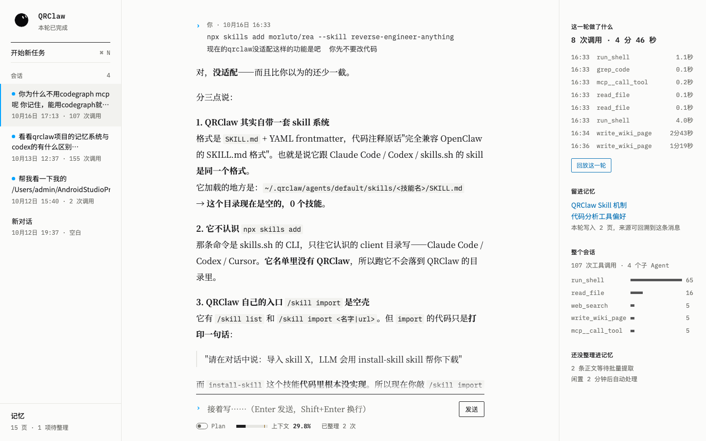
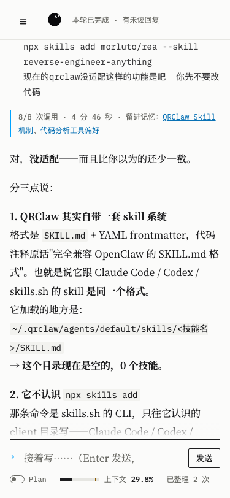
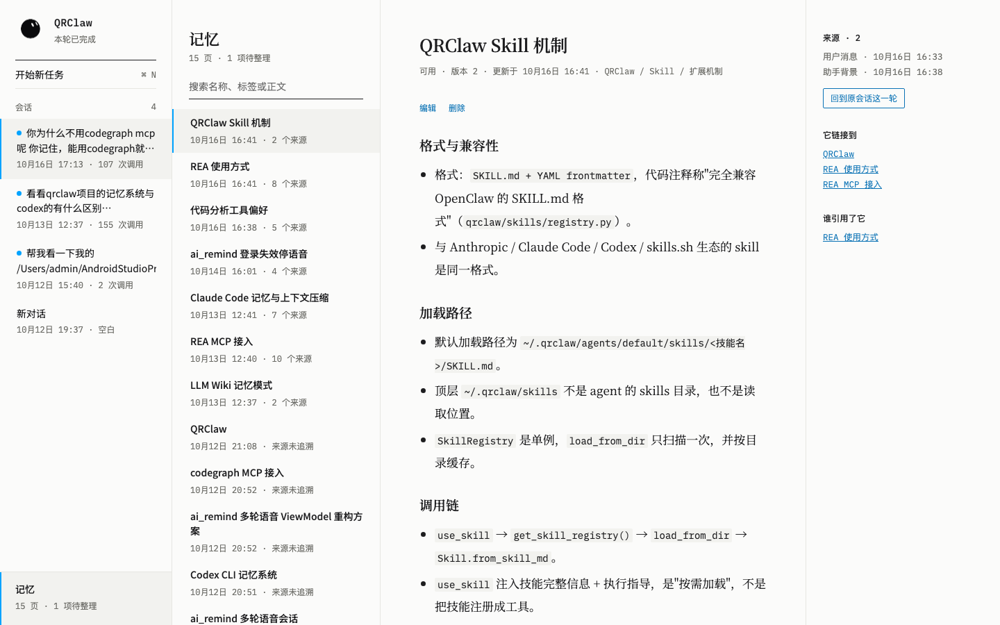
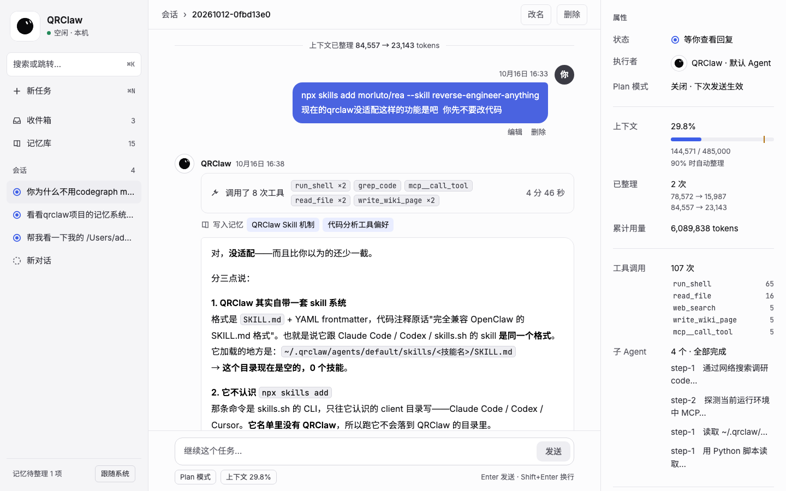
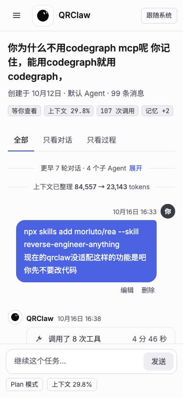
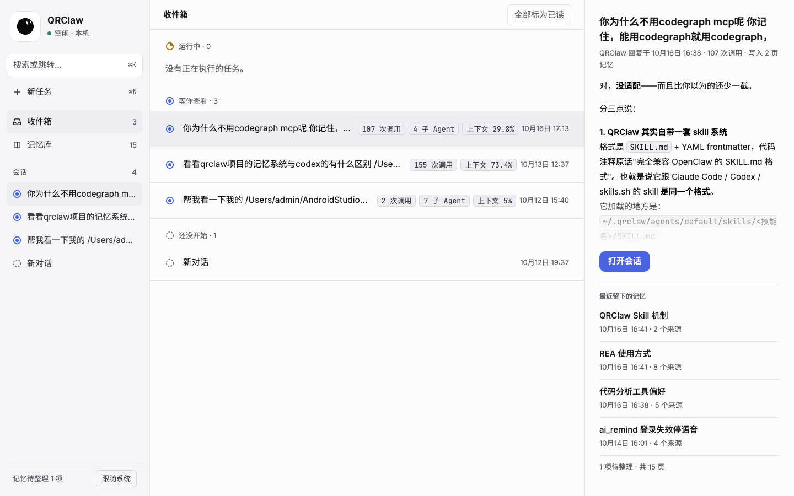
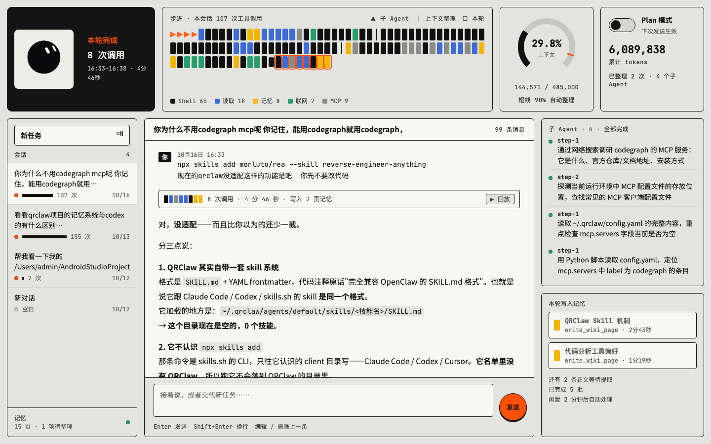
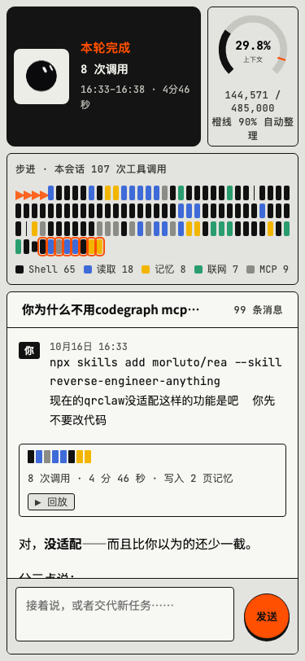
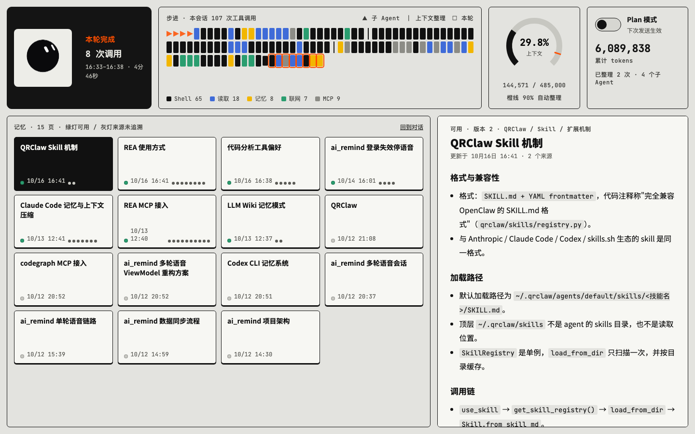
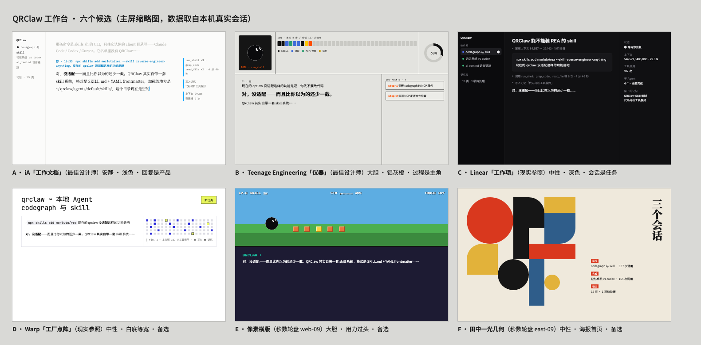

QRClaw 工作台：三个方向
三版用的是同一段真实内容：会话「你为什么不用 codegraph…」里问「QRClaw 有没有适配 npx skills add」的那一轮，一共 8 次工具调用，写入了 2 页记忆。每版都能点「回放这一轮」，按事件日志的真实顺序重演工具调用和流式回复；第二屏分别是记忆页或收件箱。会话的统计数字是最终值，比如 99 条消息。



A · 工作文档
最佳设计师：iA（Oliver Reichenstein），参考 iA Writer 的 Focus Mode
- 主张
- 回复本身就是产品。会话是一份要读的文档：衬线正文 17px，更早的轮次调灰，上下文整理显示成一道章节分隔线。
- 工作过程放在哪
- 右侧页边批注：这一轮调了哪些工具、各用了多久，写进了哪两页记忆（可以直接点进去），还有多少正文在等提取。
- form 来自内容的哪里
- 你的回复动辄上千字、带路径和代码，首先要读得舒服。
- 代价
- 同时管理多个会话最弱；工具调用多的时候，页边会很长。



C · 工作项
现实参照：linear.app 的 issue 详情页（refs/board-1.jpg）
- 主张
- 会话是一个任务。中间是 Activity 流：你的消息和回复放大，工具、子 Agent、压缩都压成一行灰字，可以展开；右侧属性栏放状态、上下文、工具统计、子 Agent、留下的记忆和待提取。
- 首页
- 收件箱，按「运行中 / 等你查看 / 还没开始」分组，每行带调用次数、子 Agent 数和上下文占比。
- form 来自内容的哪里
- 你同时开着几个持续好几天的长任务（99 条、298 条消息），要管理的是任务，不是消息。
- 代价
- 最「工具化」，陪伴感最弱，小精灵只是一个头像。记忆库这版没画，点了只会出一条提示。
已选定（11月6日）：补了浅色主题，左下角可在「跟随系统 / 浅色 / 深色」间切换；头像和左上角小精灵放大，字号和行距放松。两套主题的截图见 shots/c-light-*.png、shots/c-dark-*.png。
打开 C 的原型


B · 仪器
最佳设计师：Teenage Engineering（OP-1 / TX-6 的面板思路）
- 主张
- 过程是主角。顶部是一条仪器面板：小精灵住在显示屏里，读出当前在调用什么；会话的 107 次工具调用排成音序器，按 Shell、读取、记忆、联网、MCP 着色，子 Agent 和上下文整理各有标记；另有上下文表盘和 Plan 拨杆。
- 记忆
- 15 页做成按键卡片，绿灯表示可用，灰灯表示来源未追溯，圆点数量是来源数。
- form 来自内容的哪里
- Agent 的一轮工作本来就是一串离散的步骤，看一眼就知道它干了多少、主要在干什么。
- 代价
- 三版里最用力的一版，阅读区最窄。
另外三个备选
D 是 Warp 的工厂点阵，E 是秒数轮盘抽到的像素横版，F 是田中一光的几何构成。看中哪个，可以做成完整版。为什么没选，见 directions.md。
